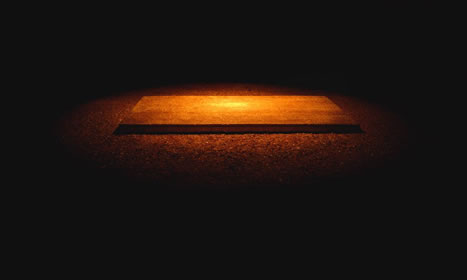

123,456 Chops, 120x200cm, c-print, edition of 6, 2008
In deep light, a man dressed like a lunatic or a patient come to the huge chop board and threw off a dead goat. Then he wildly cut it into pieces hour by hour, day by night. His anger, violence, suffocation, sadness, disappointment, are all contributed to making this film a disturbing piece in that people cannot understand if ventilation of anger, hatred, self-defense, or other negative feelings is a way to relieve oneself of such mental diseases.
An episode off this film happened very sarcastically when the artist tried to buy a pair of big-bladed machetes from kitchenware shops. They all looked at his very suspiciously and watched out him from far away. Either they told him there were no such hacking knives, or three or four people came together to be on guard against him. He must be taken as a sick person or dangerous crazy guy in some ways. In this sense, life is full of dangers, terrors, violence, insecurities, suspicions, and etc…